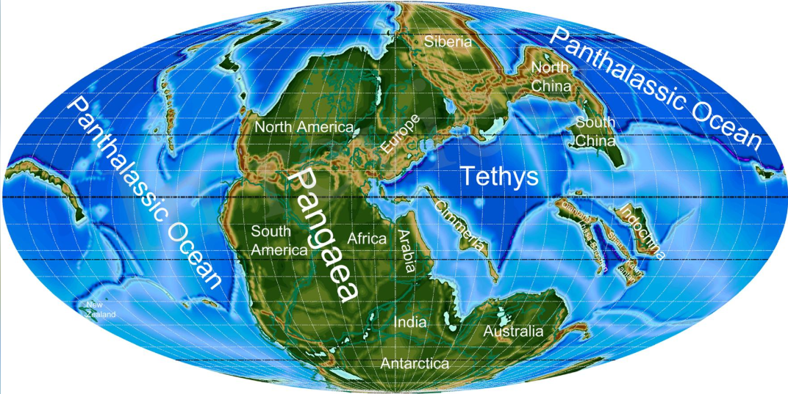

La unión de los continentes
Hace aproximadamente 335 millones de años comenzó la formación de Pangea, un supercontinente que llegó a reunir casi todas las grandes masas continentales de la Tierra. Su ensamblaje fue el resultado de millones de años de movimientos tectónicos, colisiones y formación de cadenas montañosas.
Hacia hace unos 300 millones de años, durante el Carbonífero tardío y el Pérmico temprano, la unión de Gondwana con otros bloques continentales había dado lugar a una extensa masa terrestre. Pangea alcanzó su configuración característica durante el Pérmico y continuó existiendo durante buena parte del Triásico.
Las grandes regiones continentales
En las reconstrucciones geológicas, Pangea suele dividirse en dos grandes conjuntos:
- Laurasia: agrupaba las tierras que posteriormente formarían gran parte de América del Norte, Europa y Asia.
- Gondwana: comprendía los bloques que hoy forman América del Sur, África, la Antártida, Australia, India y otras regiones.
Estas denominaciones describen grandes conjuntos continentales dentro de la historia tectónica. No significa que todos sus bloques se separaran al mismo tiempo ni que los continentes actuales surgieran de una única división instantánea.
Los océanos de Pangea
El océano Panthalassa rodeaba gran parte del supercontinente y ocupaba una enorme extensión del planeta. En el sector oriental se encontraba el océano Tetis, una región marina importante en la evolución posterior de las tierras que hoy corresponden al Mediterráneo y a partes de Asia.
La enorme extensión de Pangea también influyó en el clima. Las regiones interiores estaban muy alejadas de la influencia moderadora del mar, lo que favorecía condiciones áridas y grandes contrastes térmicos. Sin embargo, el clima variaba según la latitud, el relieve y la época geológica.
La vida en un mundo unido
Durante la existencia de Pangea vivieron diversos grupos de reptiles, anfibios y otros vertebrados terrestres. Las plantas formaban extensos ecosistemas y, con el tiempo, aparecieron los primeros dinosaurios y mamíferos durante el Triásico.
La distribución de fósiles y de determinadas formaciones rocosas en continentes que hoy están separados constituye una de las evidencias que ayudan a reconstruir la antigua conexión entre esas tierras.
El comienzo de la fragmentación
Pangea no permaneció unida para siempre. Hacia el final del Triásico y durante el Jurásico comenzaron a desarrollarse fracturas y zonas de extensión en la corteza terrestre. Los bloques continentales empezaron a separarse gradualmente, y la expansión del fondo oceánico contribuyó a abrir nuevos mares.
La apertura del océano Atlántico fue uno de los resultados de este proceso. La fragmentación continuó durante millones de años y dio lugar a configuraciones continentales cada vez más parecidas a las actuales.